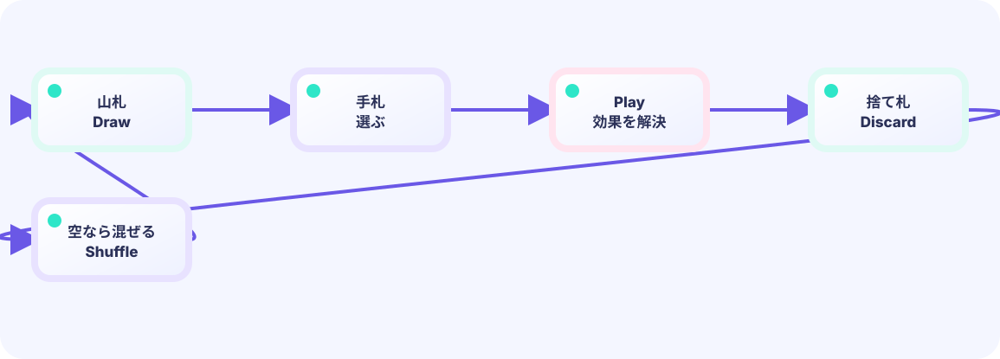

山札から引く
山札の最後の1枚を手札へ移します。1枚のカードが同時に2か所へ入らないよう、元の山札からは取り除きます。
hand = append(hand, draw[last])★★★☆☆ / PLAYABLE
カードを3つの置き場で動かし、山札が空になったときだけ捨て札を混ぜ直します。
はじめて読む人へ
山札はこれから引くリスト、手札は今使えるリスト、捨て札は使用済みリスト。カードを山札→手札→捨て札へ移すことで、データの居場所が今の状態を表します。 PLAYABLEは『このページで実際に操作できる』という印です。
このページの1本
説明と次のコードを対応させてから、ゲームで変化を確かめよう。
hand = append(hand, drawPile[0])
PLAYABLE / WEBASSEMBLY
1〜5かカードをタップして使用。Eか下ボタンでターン終了。敵を倒したらクリアです。
DEEP DIVE / DECK CYCLE
カードを消さずに、山札 → 手札 → 捨て札と居場所だけ変えます。山札が空なら捨て札を山札へ移し、順番を混ぜてから続きを引きます。
山札の最後の1枚を手札へ移します。1枚のカードが同時に2か所へ入らないよう、元の山札からは取り除きます。
hand = append(hand, draw[last])攻撃や防御を計算したあと、そのカードを手札から抜いて捨て札へ入れます。「捨てる」は削除ではなく次の出番待ちです。
discard = append(discard, played)山札が0枚になった瞬間だけ、捨て札を全部戻してシャッフルします。まだ山札がある間は混ぜません。
if len(draw) == 0 { reshuffle() }TRY IT / DRAW CYCLE
カードを使う（コスト消費）→ ターン終了でリソース回復。山札・捨て札の循環も、同じ「ターンの区切り」でまとめて処理すると迷子になりません。
山が空なら捨て札をシャッフルして山に戻す、もターン区切りで行います。
THE CYCLE EDGE
play: hand → discardつぎにturn end: draw / reshuffle循環の処理をターンの境目に集めると、戦闘中のバグが減ります。
IN THE REAL GAME
手札が5枚になるまで1枚ずつ引きます。山札が空なら捨て札を移し、混ぜます。rng.Shuffle(n, swap) の2つ目の引数は「i番とj番を入れ替える関数」です。これは Fisher–Yates シャッフルです。Goが乱数で i,j を何度も渡し、そのたびに draw[i], draw[j] = draw[j], draw[i] で入れ替えます。
for len(hand) < 5 {
if len(draw) == 0 {
draw = append(draw, discard...)
discard = discard[:0] // 箱を再利用し、要素数だけ0へ戻す
rng.Shuffle(len(draw), swap)
}
last := len(draw) - 1
hand = append(hand, draw[last])
draw = draw[:last]
}WHY THREE PILES?
引ける、選べる、使い終わった、という役目をリストで分けるとルールが読みやすくなります。
WHY SHUFFLE?
同じ12枚でも組み合わせが変わり、次に何を引くか考える面白さが生まれます。
TRY NEXT
戦闘中に二度と戻らない「除外」を4つ目のスライスとして設計してみよう。
FEEDBACK